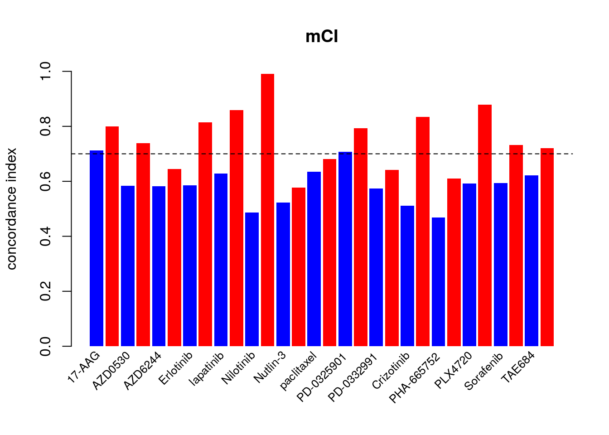
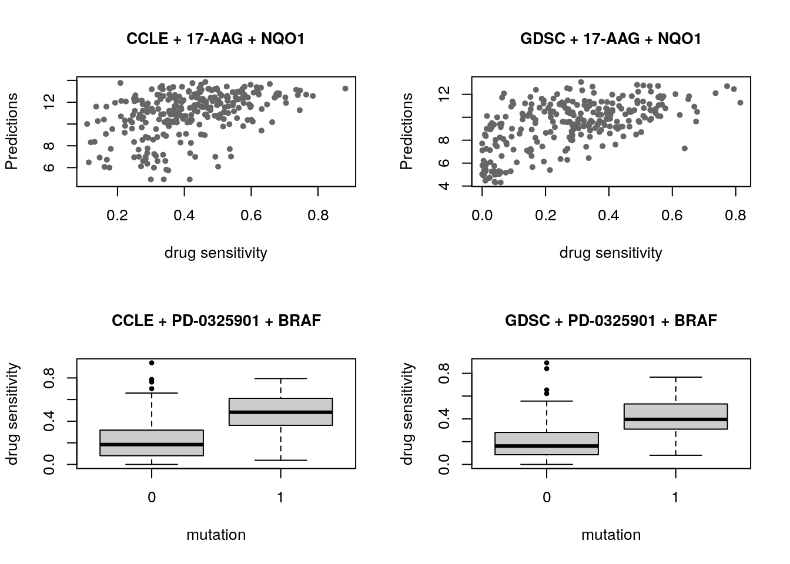
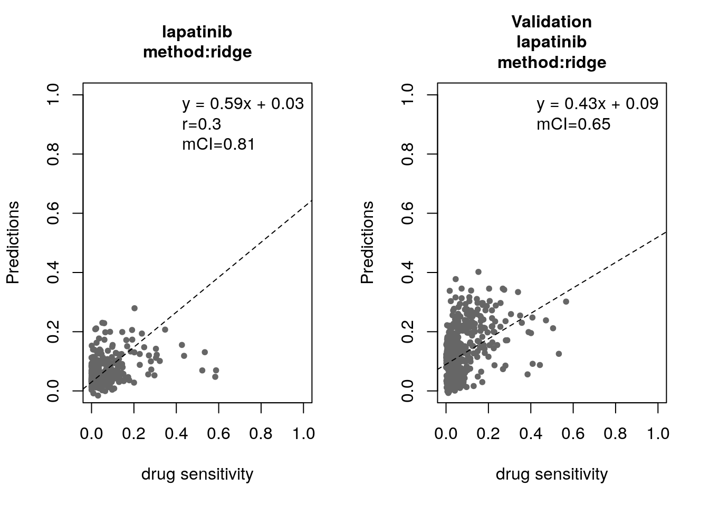
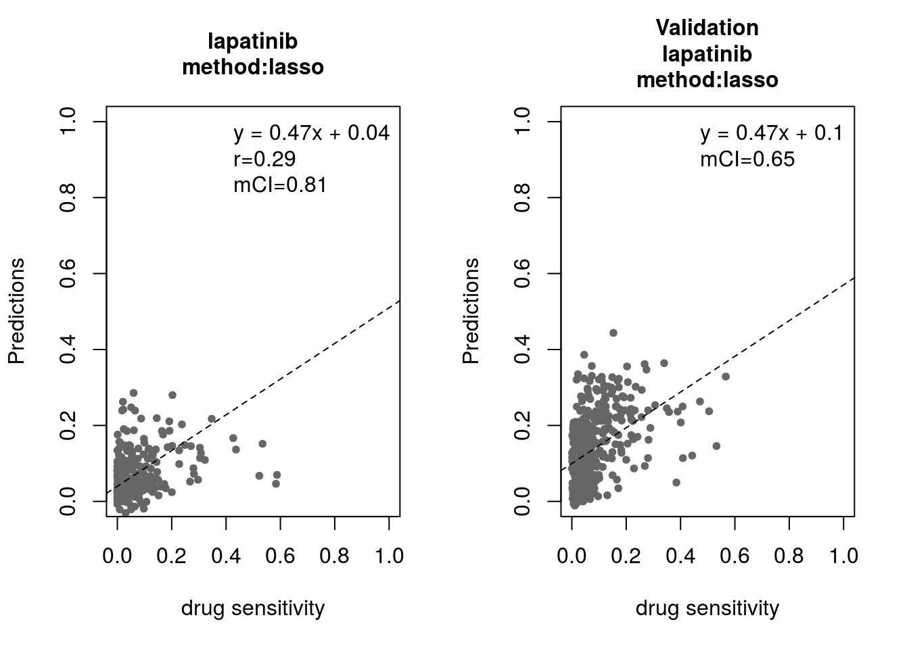
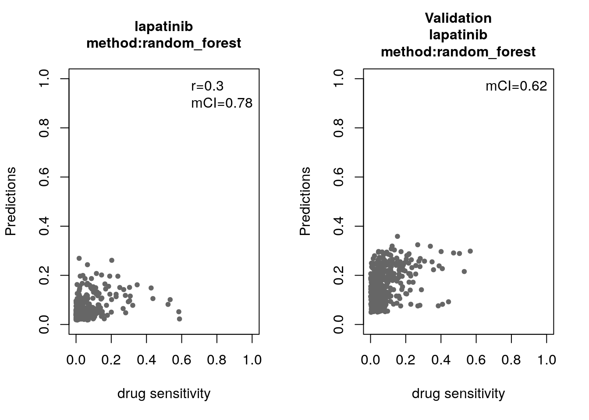
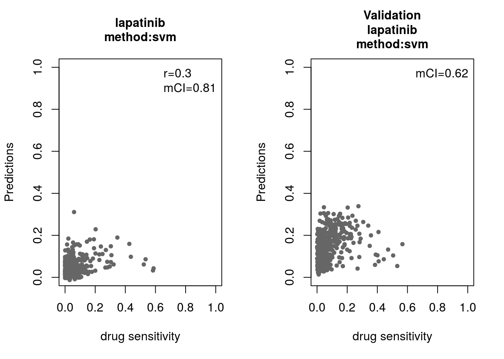

14 Biomarker discovery from large pharmacogenomics datasets
14.1 Instructors:
- Zhaleh Safikhani (zhaleh.safikhani@utoront.ca)
- Petr Smirnov (petr.smirnov@mail.utoronto.ca)
- Benjamin Haib-Kains (benjamin.haibe.kains@utoronto.ca)
14.2 Workshop Description
This workshop will focus on the challenges encountered when applying machine learning techniques in complex, high dimensional biological data. In particular, we will focus on biomarker discovery from pharmacogenomic data, which consists of developing predictors of response of cancer cell lines to chemical compounds based on their genomic features. From a methodological viewpoint, biomarker discovery is strongly linked to variable selection, through methods such as Supervised Learning with sparsity inducing norms (e.g., ElasticNet) or techniques accounting for the complex correlation structure of biological features (e.g., mRMR). Yet, the main focus of this talk will be on sound use of such methods in a pharmacogenomics context, their validation and correct interpretation of the produced results. We will discuss how to assess the quality of both the input and output data. We will illustrate the importance of unified analytical platforms, data and code sharing in bioinformatics and biomedical research, as the data generation process becomes increasingly complex and requires high level of replication to achieve robust results. This is particularly relevant as our portfolio of machine learning techniques is ever enlarging, with its set of hyperparameters that can be tuning in a multitude of ways, increasing the risk of overfitting when developing multivariate predictors of drug response.
14.2.1 Pre-requisites
- Basic knowledge of R syntax
- Familiarity with the machine learning concept and at least a few approaches
Following resources might be useful to read:
14.2.2 Workshop Participation
Participants expected to have the following required packages installed on their machines to be able to run the commands along with the instructors. * PharmacoGx and Biobase from Bioconductor * mRMRe, caret, glmnet, randomForest from cran * bhklab/mci and bhklab/PharmacoGx-ML from github
14.2.3 R / Bioconductor packages used
14.2.4 Time outline
An example for a 45-minute workshop:
| Activity | Time |
|---|---|
| Introduction | 10m |
| Basic functionalities of PharmacoGx | 15m |
| Consistency assessment between datasets | 15m |
| Machine learning and biomarker discovery | 20m |
14.3 Workshop goals and objectives
14.3.1 Learning goals
- describe the pharmacogenomic datasets and their usefulness
- learn how to extract information from these datasets and to intersect them over their common features
- identify functionalities available in PharmacoGx package to work with the high dimensional pharmacogenomics data
- assess reproducibility and replication of pharmacogenomics studies
- understand how to handle the biomarker discovery as a pattern recognition problem in the domain of pharmacogenomics studies
14.3.2 Learning objectives
- list available standardized pharmacogenomic datasets and download them
- understand the structure of these darasest and how to access the features and response quantifications
- create drug-dose response plots
- Measure the consistency across multiple datasets and how to improve such measurements
- Assess whether known biomarkers are reproduced within these datasets
- Predict new biomarkers by applying different machine learning methods
This course will focus on the challenges encountered when applying machine learning techniques in complex, high dimensional biological data. In particular, we will focus on biomarker discovery from pharmacogenomic data, which consists of developing predictors of response of cancer cell lines to chemical compounds based on their genomic features. From a methodological viewpoint, biomarker discovery is strongly linked to variable selection, through methods such as Supervised Learning with sparsity inducing norms (e.g., ElasticNet) or techniques accounting for the complex correlation structure of biological features (e.g., mRMR). Yet, the main focus of this talk will be on sound use of such methods in a pharmacogenomics context, their validation and correct interpretation of the produced results. We will discuss how to assess the quality of both the input and output data. We will illustrate the importance of unified analytical platforms, data and code sharing in bioinformatics and biomedical research, as the data generation process becomes increasingly complex and requires high level of replication to achieve robust results. This is particularly relevant as our portfolio of machine learning techniques is ever enlarging, with its set of hyperparameters that can be tuning in a multitude of ways, increasing the risk of overfitting when developing multivariate predictors of drug response.
Pharmacogenomics holds much potential to aid in discovering drug response biomarkers and developing novel targeted therapies, leading to development of precision medicine and working towards the goal of personalized therapy. Several large experiments have been conducted, both to molecularly characterize drug dose response across many cell lines, and to examine the molecular response to drug administration. However, the experiments lack a standardization of protocols and annotations, hindering meta-analysis across several experiments.
PharmacoGx was developed to address these challenges, by providing a unified framework for downloading and analyzing large pharmacogenomic datasets which are extensively curated to ensure maximum overlap and consistency.
PharmacoGx is based on a level of abstraction from the raw experimental data, and allows bioinformaticians and biologists to work with data at the level of genes, drugs and cell lines. This provides a more intuitive interface and, in combination with unified curation, simplifies analyses between multiple datasets.
Load PharamacoGx into your current workspace:
library(PharmacoGx, verbose=FALSE)
#> Warning in fun(libname, pkgname): couldn't connect to display ":0"
library(mCI, verbose=FALSE)
library(PharmacoGxML, verbose=FALSE)
library(Biobase, verbose=FALSE)
#> Loading required package: BiocGenerics
#> Loading required package: parallel
#>
#> Attaching package: 'BiocGenerics'
#> The following objects are masked from 'package:parallel':
#>
#> clusterApply, clusterApplyLB, clusterCall, clusterEvalQ,
#> clusterExport, clusterMap, parApply, parCapply, parLapply,
#> parLapplyLB, parRapply, parSapply, parSapplyLB
#> The following objects are masked from 'package:stats':
#>
#> IQR, mad, sd, var, xtabs
#> The following objects are masked from 'package:base':
#>
#> anyDuplicated, append, as.data.frame, basename, cbind,
#> colMeans, colnames, colSums, dirname, do.call, duplicated,
#> eval, evalq, Filter, Find, get, grep, grepl, intersect,
#> is.unsorted, lapply, lengths, Map, mapply, match, mget, order,
#> paste, pmax, pmax.int, pmin, pmin.int, Position, rank, rbind,
#> Reduce, rowMeans, rownames, rowSums, sapply, setdiff, sort,
#> table, tapply, union, unique, unsplit, which, which.max,
#> which.min
#> Welcome to Bioconductor
#>
#> Vignettes contain introductory material; view with
#> 'browseVignettes()'. To cite Bioconductor, see
#> 'citation("Biobase")', and for packages 'citation("pkgname")'.We have made the PharmacoSet objects of the curated datasets available for download using functions provided in the package. A table of available PharmacoSet objects can be obtained by using the availablePSets function. Any of the PharmacoSets in the table can then be downloaded by calling downloadPSet, which saves the datasets into a directory of the users choice, and returns the data into the R session.
availablePSets(saveDir=file.path(".", "Safikhani_Pharmacogenomics"))
GDSC <- downloadPSet("GDSC", saveDir=file.path(".", "Safikhani_Pharmacogenomics"))
CCLE <- downloadPSet("CCLE", saveDir=file.path(".", "Safikhani_Pharmacogenomics"))PharmacoGx can be used to process pharmacogenomic datasets. First we want to check the heterogenity of cell lines in one of the available psets, CCLE.
mycol <- c("#8dd3c7","#ffffb3","#bebada","#fb8072","#80b1d3","#fdb462",
"#b3de69","#fccde5","#d9d9d9","#bc80bd","#ccebc5","#ffed6f",
"#a6cee3","#1f78b4","#b2df8a","#33a02c","#fb9a99","#e31a1c",
"#fdbf6f","#ff7f00","#cab2d6","#6a3d9a","#ffff99","#b15928")
pie(table(CCLE@cell[,"tissueid"]),
col=mycol,
main="Tissue types",
radius=1,
cex=0.8)
(#fig:pie_chart)Tissue of origin of cell lines in CCLE study
Drug-Dose response data included in the PharmacoSet objects can be conviniently plotted using the drugDoseResponseCurve function. Given a list of PharmacoSets, a drug name and a cell name, it will plot the drug dose response curves for the given cell-drug combination in each dataset, allowing direct comparisons of data between datasets.
CCLE.auc <- summarizeSensitivityProfiles(
pSet=CCLE,
sensitivity.measure="auc_published",
summary.stat="median",
verbose=FALSE)
lapatinib.aac <- CCLE.auc["lapatinib",]
cells <- names(lapatinib.aac)[
c(which.min(lapatinib.aac),
which((lapatinib.aac > 0.2) & (lapatinib.aac < 0.4))[1],
which.max(lapatinib.aac))]
par(mfrow=c(2, 2))
drugDoseResponseCurve(drug="lapatinib", cellline=cells[1],
pSets=CCLE, plot.type="Fitted",
legends.label="auc_published")
drugDoseResponseCurve(drug="lapatinib", cellline=cells[2],
pSets=CCLE, plot.type="Fitted",
legends.label="auc_published")
drugDoseResponseCurve(drug="lapatinib", cellline=cells[3],
pSets=CCLE, plot.type="Fitted",
legends.label="auc_published")
Figure 4.14: Cells response to lapatinib in CCLE
In pharmacogenomic studies Cells were also tested for their response to increasing concentrations of various compounds, and form this the IC50 and AUC were computed. These pharmacological profiles are available for all the psets in PharmacoGx.
library(ggplot2, verbose=FALSE)
library(reshape2, verbose=FALSE)
melted_data <- melt(CCLE.auc)
NA_rows <- unique(which(is.na(melted_data), arr.ind=T)[,1])
melted_data <- melted_data[-NA_rows,]
ggplot(melted_data, aes(x=Var1,y=value)) +
geom_boxplot(fill="gray") +
theme(axis.text.x=element_text(angle=90,hjust=1)) +
xlab("Drugs") +
ylab("AAC")(#fig:ccle_auc)Cells response to drugs in CCLE
#hist(CCLE.auc["lapatinib",], xlab="Cells response to lapatinib(AAC)",
# col="gray", main="")In this section we will investigate the consistency between the GDSC and CCLE datasets. In both CCLE and GDSC, the transcriptome of cells was profiled using an Affymatrix microarray chip. Cells were also tested for their response to increasing concentrations of various compounds, and form this the IC50 and AUC were computed. However, the cell and drugs names used between the two datasets were not consistent. Furthermore, two different microarray platforms were used. However, PharmacoGx allows us to overcome these differences to do a comparative study between these two datasets.
GDSC was profiled using the hgu133a platform, while CCLE was profiled with the expanded hgu133plus2 platform. While in this case the hgu133a is almost a strict subset of hgu133plus2 platform, the expression information in PharmacoSet objects is summarized by Ensemble Gene Ids, allowing datasets with different platforms to be directly compared. The probe to gene mapping is done using the BrainArray customCDF for each platform .
To begin, you would load the datasets from disk or download them using the downloadPSet function above.
We want to investigate the consistency of the data between the two datasets. The common intersection between the datasets can then be found using intersectPSet. We create a summary of the gene expression and drug sensitivity measures for both datasets, so we are left with one gene expression profile and one sensitivity profile per cell line within each dataset. We can then compare the gene expression and sensitivity measures between the datasets using a standard correlation coefficient.
common <- intersectPSet(pSets = list("CCLE"=CCLE, "GDSC"=GDSC),
intersectOn = c("cell.lines", "drugs"),
strictIntersect = TRUE)
#> Intersecting large PSets may take a long time ...
drugs <- drugNames(common$CCLE)
##Example of concordant and discordant drug curves
cases <- rbind(
c("CAL-85-1", "17-AAG"),
c("HT-29", "PLX4720"),
c("COLO-320-HSR", "AZD6244"),
c("HT-1080", "PD-0332991"))
par(mfrow=c(2, 2))
for (i in 1:nrow(cases)) {
drugDoseResponseCurve(pSets=common,
drug=cases[i,2],
cellline=cases[i,1],
legends.label="ic50_published",
plot.type="Fitted",
ylim=c(0,130))
}(#fig:Replication_curves)Consistency of drug response curves across studies
##AAC scatter plot
GDSC.aac <- summarizeSensitivityProfiles(
pSet=common$GDSC,
sensitivity.measure='auc_recomputed',
summary.stat="median",
verbose=FALSE)
CCLE.aac <- summarizeSensitivityProfiles(
pSet=common$CCLE,
sensitivity.measure='auc_recomputed',
summary.stat="median",
verbose=FALSE)
GDSC.ic50 <- summarizeSensitivityProfiles(
pSet=common$GDSC,
sensitivity.measure='ic50_recomputed',
summary.stat="median",
verbose=FALSE)
CCLE.ic50 <- summarizeSensitivityProfiles(
pSet=common$CCLE,
sensitivity.measure='ic50_recomputed',
summary.stat="median",
verbose=FALSE)
drug <- "lapatinib"
#par(mfrow=c(1, 2))
myScatterPlot(x=GDSC.aac[drug,],
y=CCLE.aac[drug,],
method=c("transparent"),
transparency=0.8, pch=16, minp=50,
xlim=c(0, max(max(GDSC.aac[drug,], na.rm=T), max(CCLE.aac[drug,], na.rm=T))),
ylim=c(0, max(max(GDSC.aac[drug,], na.rm=T), max(CCLE.aac[drug,], na.rm=T))),
main="cells response to lapatinib",
cex.sub=0.7,
xlab="AAC in GDSC",
ylab="AAC in CCLE")
legend("topright",
legend=sprintf("r=%s\nrs=%s\nCI=%s",
round(cor(GDSC.aac[drug,],
CCLE.aac[drug,],
method="pearson",
use="pairwise.complete.obs"),
digits=2),
round(cor(GDSC.aac[drug,],
CCLE.aac[drug,],
method="spearman",
use="pairwise.complete.obs"),
digits=2),
round(paired.concordance.index(GDSC.aac[drug,],
CCLE.aac[drug,],
delta.pred=0,
delta.obs=0)$cindex,
digits=2)),
bty="n")(#fig:sensitivity_scatter_plots)Concordance of AAC values
To better assess the concordance of multiple pharmacogenomic studies we introduced the modified concordance index (mCI). Recognizing that the noise in the drug screening assays is high and may yield to inaccurate sensitive-based ranking of cell lines with close AAC values, the mCI only considers cell line pairs with drug sensitivity (AAC) difference greater than \(\delta\) .
c_index <- mc_index <- NULL
for(drug in drugs){
tt <- mCI::paired.concordance.index(GDSC.aac[drug,], CCLE.aac[drug,], delta.pred=0, delta.obs=0, alternative="greater")
c_index <- c(c_index, tt$cindex)
tt <- mCI::paired.concordance.index(GDSC.aac[drug,], CCLE.aac[drug,], delta.pred=0.2, delta.obs=0.2, alternative="greater", logic.operator="or")
mc_index <- c(mc_index, tt$cindex)
}
mp <- barplot(as.vector(rbind(c_index, mc_index)), beside=TRUE, col=c("blue", "red"), ylim=c(0, 1), ylab="concordance index", space=c(.15,.85), border=NA, main="mCI")
text(mp, par("usr")[3], labels=as.vector(rbind(drugs, rep("", 15))), srt=45, adj=c(1.1,1.1), xpd=TRUE, cex=.8)
abline(h=.7, lty=2)
The association between molecular features and response to a given drug is modelled using a linear regression model adjusted for tissue source: \[Y = \beta_{0} + \beta_{i}G_i + \beta_{t}T + \beta_{b}B\] where \(Y\) denotes the drug sensitivity variable, \(G_i\), \(T\) and \(B\) denote the expression of gene \(i\), the tissue source and the experimental batch respectively, and \(\beta\)s are the regression coefficients. The strength of gene-drug association is quantified by \(\beta_i\), above and beyond the relationship between drug sensitivity and tissue source. The variables \(Y\) and \(G\) are scaled (standard deviation equals to 1) to estimate standardized coefficients from the linear model. Significance of the gene-drug association is estimated by the statistical significance of \(\beta_i\) (two-sided t test). P-values are then corrected for multiple testing using the false discovery rate (FDR) approach.
As an example of the reproducibility of biomarker discovery across pharmacogenomic studies, we can model the significance of the association between two drugs and their known biomarkers in CCLE and GDSC. We examine the association between drug 17-AAG and gene NQO1, as well as drug PD-0325901 and gene BRAF:
features <- PharmacoGx::fNames(CCLE, "rna")[
which(featureInfo(CCLE,
"rna")$Symbol == "NQO1")]
ccle.sig.rna <- drugSensitivitySig(pSet=CCLE,
mDataType="rna",
drugs=c("17-AAG"),
features=features,
sensitivity.measure="auc_published",
molecular.summary.stat="median",
sensitivity.summary.stat="median",
verbose=FALSE)
gdsc.sig.rna <- drugSensitivitySig(pSet=GDSC,
mDataType="rna",
drugs=c("17-AAG"),
features=features,
sensitivity.measure="auc_published",
molecular.summary.stat="median",
sensitivity.summary.stat="median",
verbose=FALSE)
ccle.sig.mut <- drugSensitivitySig(pSet=CCLE,
mDataType="mutation",
drugs=c("PD-0325901"),
features="BRAF",
sensitivity.measure="auc_published",
molecular.summary.stat="and",
sensitivity.summary.stat="median",
verbose=FALSE)
gdsc.sig.mut <- drugSensitivitySig(pSet=GDSC,
mDataType="mutation",
drugs=c("PD-0325901"),
features="BRAF",
sensitivity.measure="auc_published",
molecular.summary.stat="and",
sensitivity.summary.stat="median",
verbose=FALSE)
ccle.sig <- rbind(ccle.sig.rna, ccle.sig.mut)
gdsc.sig <- rbind(gdsc.sig.rna, gdsc.sig.mut)
known.biomarkers <- cbind("GDSC effect size"=gdsc.sig[,1],
"GDSC pvalue"=gdsc.sig[,6],
"CCLE effect size"=ccle.sig[,1],
"CCLE pvalue"=ccle.sig[,6])
rownames(known.biomarkers) <- c("17-AAG + NQO1","PD-0325901 + BRAF")
library(xtable, verbose=FALSE)
xtable(known.biomarkers, digits=c(0, 2, -1, 2, -1), caption='Concordance of biomarkers across stuudies')
par(mfrow=c(2, 2))
CCLE_expr <- t(exprs(summarizeMolecularProfiles(CCLE, mDataType="rna", fill.missing=FALSE)))
CCLE_cells <- intersect(rownames(CCLE_expr), colnames(CCLE.aac))
plot(CCLE.aac["17-AAG", CCLE_cells], CCLE_expr[CCLE_cells, features],
main="CCLE + 17-AAG + NQO1",
cex.main=1, ylab="Predictions", xlab="drug sensitivity", pch=20, col="gray40")
GDSC_expr <- t(exprs(summarizeMolecularProfiles(GDSC, mDataType="rna", fill.missing=FALSE)))
#> Summarizing rna molecular data for: GDSC
GDSC_cells <- intersect(rownames(GDSC_expr), colnames(GDSC.aac))
plot(GDSC.aac["17-AAG", GDSC_cells], GDSC_expr[GDSC_cells, features],
main="GDSC + 17-AAG + NQO1",
cex.main=1, ylab="Predictions", xlab="drug sensitivity", pch=20, col="gray40")
CCLE_mut <- t(exprs(summarizeMolecularProfiles(CCLE, mDataType="mutation", fill.missing=FALSE, summary.stat="or")))
CCLE_cells <- intersect(rownames(CCLE_mut), colnames(CCLE.aac))
boxplot(CCLE.aac["PD-0325901", CCLE_cells]~ CCLE_mut[CCLE_cells, "BRAF"], col="gray80", pch=20, main="CCLE + PD-0325901 + BRAF",
cex.main=1, xlab="mutation", ylab="drug sensitivity")
GDSC_mut <- t(exprs(summarizeMolecularProfiles(GDSC, mDataType="mutation", fill.missing=FALSE, summary.stat="or")))
GDSC_cells <- intersect(rownames(GDSC_mut), colnames(GDSC.aac))
boxplot(GDSC.aac["PD-0325901", GDSC_cells]~ GDSC_mut[GDSC_cells, "BRAF"], col="gray80", pch=20, main="GDSC + PD-0325901 + BRAF",
cex.main=1, xlab="mutation", ylab="drug sensitivity")
Some of the widely used multivariate machine learning methods such as elastic net, Random Forest (RF) and Support Vector Machine (SVM) have been already implemented in the MLWorkshop. It optimizes hyperparameters of these methods in the training phase. To assess the performance of the predictive models, it implements m number of sampling with n-fold cross validations (CV). The performance will then be assessed by multiple metrics including pearson correlation coefficient, concordance index and modified concordance index.
library(mRMRe, verbose=FALSE)
#> Loading required package: survival
#>
#> Attaching package: 'survival'
#> The following object is masked from 'package:PharmacoGxML':
#>
#> ridge
#> Loading required package: igraph
#>
#> Attaching package: 'igraph'
#> The following objects are masked from 'package:BiocGenerics':
#>
#> normalize, path, union
#> The following objects are masked from 'package:stats':
#>
#> decompose, spectrum
#> The following object is masked from 'package:base':
#>
#> union
#>
#> Attaching package: 'mRMRe'
#> The following objects are masked from 'package:Biobase':
#>
#> featureData, featureNames, sampleNames
library(Biobase, verbose=FALSE)
library(Hmisc, verbose=FALSE)
#> Loading required package: lattice
#> Loading required package: Formula
#>
#> Attaching package: 'Hmisc'
#> The following objects are masked from 'package:xtable':
#>
#> label, label<-
#> The following object is masked from 'package:Biobase':
#>
#> contents
#> The following objects are masked from 'package:base':
#>
#> format.pval, units
library(glmnet, verbose=FALSE)
#> Loading required package: Matrix
#> Loading required package: foreach
#> Loaded glmnet 2.0-16
library(caret, verbose=FALSE)
#>
#> Attaching package: 'caret'
#> The following object is masked from 'package:survival':
#>
#> cluster
library(randomForest, verbose=FALSE)
#> randomForest 4.6-14
#> Type rfNews() to see new features/changes/bug fixes.
#>
#> Attaching package: 'randomForest'
#> The following object is masked from 'package:ggplot2':
#>
#> margin
#> The following object is masked from 'package:Biobase':
#>
#> combine
#> The following object is masked from 'package:BiocGenerics':
#>
#> combine
##Preparing trainig dataset
train_expr <- t(exprs(summarizeMolecularProfiles(GDSC, mDataType="rna", fill.missing=FALSE, verbose=FALSE)))
aac <- summarizeSensitivityProfiles(GDSC, sensitivity.measure="auc_recomputed", drug="lapatinib", fill.missing=FALSE, verbose=FALSE)
cells <- intersect(rownames(train_expr), names(aac))
df <- as.matrix(cbind(train_expr[cells,], "lapatinib"=aac[cells]))
##Preparing validation dataset
validation_expr <- summarizeMolecularProfiles(CCLE, mDataType="rna", fill.missing=FALSE, verbose=FALSE)
actual_labels <- summarizeSensitivityProfiles(CCLE, sensitivity.measure="auc_recomputed", drug="lapatinib", fill.missing=FALSE, verbose=FALSE)
for(method in c("ridge", "lasso", "random_forest", "svm")){
par(mfrow=c(1, 2))
res <- optimization(train=df[, -ncol(df), drop=F],
labels=t(df[, ncol(df), drop=F]),
method=method,
folds.no=5,
sampling.no=1,
features.no=10,
feature.selection="mRMR",
assessment=c("corr", "mCI"))
validation_labels <- validation(model=res$model$lapatinib,
validation.set=t(exprs(validation_expr)),
validation.labels=actual_labels,
method=method,
assessment="mCI")
}
This document was generated with the following R version and packages loaded:
sessionInfo()
#> R version 3.5.0 (2018-04-23)
#> Platform: x86_64-pc-linux-gnu (64-bit)
#> Running under: Debian GNU/Linux 9 (stretch)
#>
#> Matrix products: default
#> BLAS: /usr/lib/openblas-base/libblas.so.3
#> LAPACK: /usr/lib/libopenblasp-r0.2.19.so
#>
#> locale:
#> [1] LC_CTYPE=en_US.UTF-8 LC_NUMERIC=C
#> [3] LC_TIME=en_US.UTF-8 LC_COLLATE=en_US.UTF-8
#> [5] LC_MONETARY=en_US.UTF-8 LC_MESSAGES=C
#> [7] LC_PAPER=en_US.UTF-8 LC_NAME=C
#> [9] LC_ADDRESS=C LC_TELEPHONE=C
#> [11] LC_MEASUREMENT=en_US.UTF-8 LC_IDENTIFICATION=C
#>
#> attached base packages:
#> [1] parallel stats graphics grDevices utils datasets methods
#> [8] base
#>
#> other attached packages:
#> [1] randomForest_4.6-14 caret_6.0-80 glmnet_2.0-16
#> [4] foreach_1.4.4 Matrix_1.2-14 Hmisc_4.1-1
#> [7] Formula_1.2-3 lattice_0.20-35 mRMRe_2.0.7
#> [10] igraph_1.2.1 survival_2.42-6 xtable_1.8-2
#> [13] reshape2_1.4.3 ggplot2_3.0.0 Biobase_2.41.1
#> [16] BiocGenerics_0.27.1 PharmacoGxML_0.1.0 mCI_0.1.0
#> [19] PharmacoGx_1.11.0
#>
#> loaded via a namespace (and not attached):
#> [1] fgsea_1.7.1 colorspace_1.3-2 class_7.3-14
#> [4] rprojroot_1.3-2 htmlTable_1.12 lsa_0.73.1
#> [7] pls_2.6-0 base64enc_0.1-3 rstudioapi_0.7
#> [10] DRR_0.0.3 SnowballC_0.5.1 lubridate_1.7.4
#> [13] prodlim_2018.04.18 codetools_0.2-15 splines_3.5.0
#> [16] mnormt_1.5-5 robustbase_0.93-1 knitr_1.20
#> [19] RcppRoll_0.3.0 magicaxis_2.0.3 broom_0.4.5
#> [22] ddalpha_1.3.4 kernlab_0.9-26 cluster_2.0.7-1
#> [25] sfsmisc_1.1-2 mapproj_1.2.6 compiler_3.5.0
#> [28] backports_1.1.2 assertthat_0.2.0 lazyeval_0.2.1
#> [31] limma_3.37.3 acepack_1.4.1 htmltools_0.3.6
#> [34] tools_3.5.0 bindrcpp_0.2.2 gtable_0.2.0
#> [37] glue_1.2.0 RANN_2.5.1 dplyr_0.7.6
#> [40] maps_3.3.0 fastmatch_1.1-0 Rcpp_0.12.17
#> [43] slam_0.1-43 gdata_2.18.0 nlme_3.1-137
#> [46] iterators_1.0.10 psych_1.8.4 timeDate_3043.102
#> [49] gower_0.1.2 xfun_0.3 stringr_1.3.1
#> [52] gtools_3.8.1 DEoptimR_1.0-8 MASS_7.3-50
#> [55] scales_0.5.0 ipred_0.9-6 relations_0.6-8
#> [58] RColorBrewer_1.1-2 sets_1.0-18 yaml_2.1.19
#> [61] gridExtra_2.3 downloader_0.4 rpart_4.1-13
#> [64] latticeExtra_0.6-28 stringi_1.2.3 highr_0.7
#> [67] NISTunits_1.0.1 plotrix_3.7-2 checkmate_1.8.5
#> [70] caTools_1.17.1 BiocParallel_1.15.7 lava_1.6.2
#> [73] geometry_0.3-6 rlang_0.2.1 pkgconfig_2.0.1
#> [76] bitops_1.0-6 pracma_2.1.4 evaluate_0.10.1
#> [79] purrr_0.2.5 bindr_0.1.1 recipes_0.1.3
#> [82] htmlwidgets_1.2 labeling_0.3 CVST_0.2-2
#> [85] tidyselect_0.2.4 plyr_1.8.4 magrittr_1.5
#> [88] bookdown_0.7 R6_2.2.2 gplots_3.0.1
#> [91] dimRed_0.1.0 sm_2.2-5.5 pillar_1.3.0
#> [94] foreign_0.8-70 withr_2.1.2 abind_1.4-5
#> [97] nnet_7.3-12 tibble_1.4.2 crayon_1.3.4
#> [100] KernSmooth_2.23-15 rmarkdown_1.10 grid_3.5.0
#> [103] data.table_1.11.4 marray_1.59.0 piano_1.21.0
#> [106] ModelMetrics_1.1.0 digest_0.6.15 tidyr_0.8.1
#> [109] stats4_3.5.0 munsell_0.5.0 celestial_1.4.1
#> [112] magic_1.5-8 tcltk_3.5.0